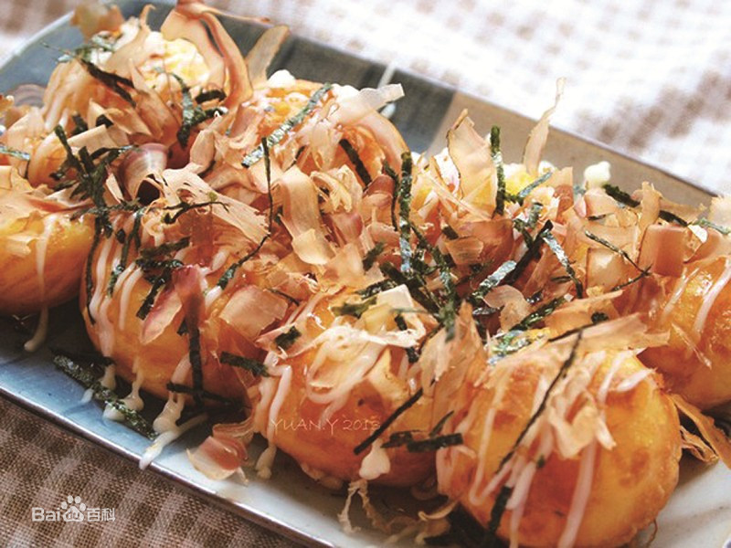
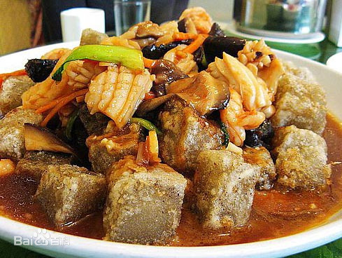

旅游景点
▲疙瘩汤
疙瘩汤，是一道北方家常汤品，在山西太原、榆次地区称为拌汤，晋城一带称不烂汤，制作原料主要有面粉、鸡蛋、西红柿等。疙瘩汤里的汤可以是清水或排骨汤、鱼汤、骨头汤等。从饮食健康的角度而言，疙瘩汤更适合晚餐食用，因为面食类容易消化。
疙瘩汤既可以做成素的蔬菜疙瘩汤，也可以做成有肉的荤疙瘩汤。用鸡蛋、肉类等做成的疙瘩汤特别适合脑力工作者，可以补充蛋白质。而对于身体虚弱、消化功能较差的人来说，更适合清淡的、素的疙瘩汤，以鸡蛋、油麦菜、菠菜、西红柿等为主，蔬菜中含有大量的维生素和矿物质以及纤维素，能改变由于多食动物性食品而呈现的酸性体质，有助于增强身体的免疫力。对于食欲不振或经常有应酬喝酒的人也比较适合喝素疙瘩汤，而有肉的疙瘩汤会增加肝脏的负担。
▲章鱼烧
章鱼烧 ，起源于日本大阪，又名章鱼小丸子，成份主要是章鱼、章鱼烧粉、柴鱼片、海苔、沙拉酱、章鱼烧酱等。
章鱼烧的历史要追溯到大正年代，素有皮酥肉嫩、味美价廉之特点，是日本家喻户晓的国粹小吃。后来，章鱼小丸子在东南亚各地区流行起来，成为各地区的新兴食品之一。
由于 口感新鲜、味美，章鱼小丸子都是现做现卖，由多种可口的原料配成，纯正的章鱼小丸子的味道非常吸引人，让人百吃不厌，且投资少、风险低、见效快，投资三千元左右，可以做专卖店，做摊车，非常适合个人创业。
海鲜焖子
海鲜焖子是辽宁省大连市的特色小吃，由地瓜粉熬制的凉粉配虾段、海螺片等海鲜做成。
原料主要有油、凉粉、虾段、海螺片、蒜泥、芝麻酱、酱油、醋、盐；海鲜的种类可根据个人爱好增减。
海鲜焖子的做法：首先把大块的凉粉放在平底铁锅里，放少量油，用铲子把它压成小碎块，小火慢煎，把外面煎焦了，出锅后淋上炒好的虾段、海螺片等海鲜再加入蒜泥、芝麻酱、酱油、醋、等调料，香喷喷的“海鲜焖子”就做好了。